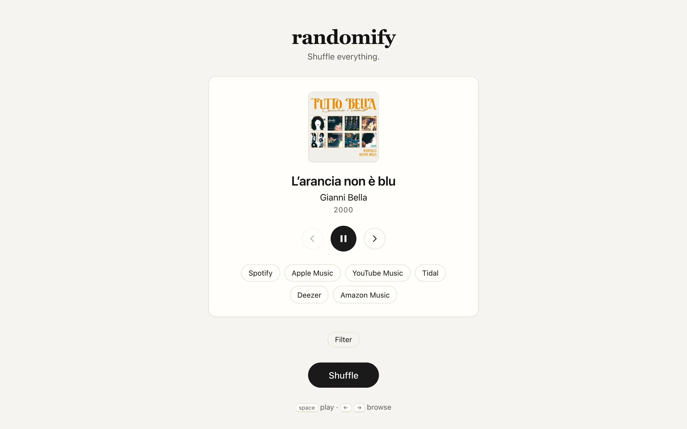

Randomify is a shuffle button pointed at everything ever recorded. Each press draws one song from a corpus built out of MusicBrainz, plays a 30-second preview, and shows buttons that open the same track on Spotify, Apple Music, YouTube Music, Tidal, Deezer, Amazon Music, and, when an exact link exists, Pandora and Bandcamp. There are no recommendations and no play counts. The problems I found interesting are underneath: what "random" should mean over a catalogue where popularity follows a long tail, how to draw a song in one database round trip, and how to turn a MusicBrainz recording into working links on services that mostly don't want to be linked to.
From dump to backlog
A weekly job on a Mac downloads the MusicBrainz full export, and DuckDB joins the tables I need into one row per recording: earliest dated release, tag-voted genres, artist country, release language, and any streaming URLs MusicBrainz already knows. Of roughly 30 million recordings, about 6 million carry an ISRC, the industry's per-track identifier, and those are the candidates. They go into a backlog table in Neon Postgres, ordered so partial progress is useful: round-robin across artists so early resolution spreads over many catalogues instead of draining one, then round-robin across decades so the resolved set doesn't collapse onto the newest releases. An hourly job resolves 1,000 of them. The catalogue grows indefinitely and a skipped run only means it grows later.
Tempered sampling

{kind=link}
Uniform sampling over songs sounds fair and is what nobody wants. An artist with 2,000 registered recordings would come up a thousand times more often than one with two singles, and crowded genres would drown out everything else. Uniform over artists overcorrects the other way. So a spin walks down a hierarchy: a facet value, then an artist, then a release group, then a recording, where the facet is one of genre, decade, country, or language, picked at random per spin. At every level a node with \(n\) streamable songs beneath it is chosen with probability
\[ P(i) = \frac{n_i^{\alpha}}{\sum_j n_j^{\alpha}}, \qquad \alpha = 0.4. \]At \(\alpha = 0\) every branch is equally likely and obscure artists are heavily over-weighted. At \(\alpha = 1\) the walk comes out close to uniform over songs, though not exactly. A recording with three genre tags counts toward three genres and carries three times the mass, and the release-group level doesn't know which facet the walk came in through. The 0.4 is a judgment call rather than a measurement. The tests only assert that it flattens the distribution without inverting it. It's fixed, and the app has no knob for it.
One query per spin
The tempered weights are precomputed into prefix-sum tables, indexed on partition and cumulative weight, for each facet value, each artist within a facet value, and each release group within an artist. Picking a node is a point lookup: scale a uniform draw by the partition total and take the first row whose cumulative weight crosses it. The Worker generates the draws, and one SQL query of chained CTEs resolves all four levels, joins the display metadata, and aggregates the platform links as JSON. One round trip per spin, every level indexed.
Repeats are handled without server state. The client keeps the last 25 artist IDs and sends them along. When that list is non-empty the Worker generates eight artist draws instead of one, and the SQL prefers the first that lands on an unseen artist. If all eight are excluded the first draw wins anyway.
Filters break the prefix-sum walk, because removing rows corrupts the cumulative weights. Filtered spins draw from a flat table instead, one row per recording with all its filterable attributes and a weight that mirrors the artist, release group, recording part of the walk: \(a^\alpha r^\alpha / (S_a\, r)\) for an artist with \(a\) tracks and a release group with \(r\) tracks, where \(S_a\) is the sum of \(r^\alpha\) over that artist's release groups. Each artist's total weight is then exactly \(a^\alpha\), and a test asserts that to ten decimal places. The draw orders the matching rows by \(-\ln(U)/w\) with \(U\) uniform and takes the first. That is the exponential-clock form of weighted sampling from Efraimidis and Spirakis (Information Processing Letters, 2006), and it is exact over any subset in one pass. Filters live in the URL, so a filtered shuffle is a link.
Finding the song
The corpus is anchored on Deezer because its API looks up by ISRC without authentication. The resolver spaces requests 220 ms apart, about 4.5 a second, under Deezer's limit of 50 per 5 seconds, and a recording enters the corpus only if the lookup returns an exact match with a playable preview. Deezer also supplies the cover art and the preview track ID.
I don't trust the match blindly. Candidate and query are normalised (diacritics stripped, featuring credits and remaster tags removed) and scored with a Sorensen-Dice coefficient over token sets, title weighted 0.5, artist 0.3, duration agreement 0.2. A fuzzy search hit needs 0.82 to count as exact. Even an ISRC hit needs 0.5, because a wrong ISRC in MusicBrainz or on the platform would otherwise ship a confidently wrong link.
For the other platforms, exact URLs come from MusicBrainz URL relationships when they exist. Otherwise the button is a pre-filled search on that platform, which is why Pandora and Bandcamp only appear with an exact link: Pandora's search returns stations and Bandcamp mostly lacks mainstream releases. A canary set of well-known ISRCs with known-correct URLs runs every batch, and a resolver whose exact-hit ratio drops below half gets demoted to search-only instead of shipping bad data.
Deezer preview URLs expire within hours, so I store a stable /preview/{id} path and the Worker mints a fresh URL at play time, answering with a 302 cached at the edge for 45 seconds. The frontend preflights that redirect before committing a song to the deck, so a dead preview is skipped and the next spin, already prefetched, takes its place. The deck itself holds the last 60 songs, forward to discover and back to return to one you heard. Safari needs a muted play-then-pause on the first tap before it will let a script start audio later.
Keeping it running
Serving is all Cloudflare: Pages for the SvelteKit frontend, a Worker for the sampler, and Hyperdrive pooling connections to Neon. The Worker opens one Postgres connection per request, because Workers forbid reusing an I/O object across requests, and Hyperdrive makes that cheap. Alerts go through a Durable Object that coalesces failures and pushes to ntfy.
Corpus construction runs on a Mac under launchd: the dump refresh weekly, the resolve batch hourly, a weight rebuild daily. Each job takes a lock, pings healthchecks.io on start, success, and failure, and pushes to ntfy when it fails. The dead-man's switch matters because a powered-off Mac is silent, and the missing ping is the alert. A weight rebuild truncates and reloads the serving tables in one transaction, so readers see the old corpus until commit and never a half-built one.